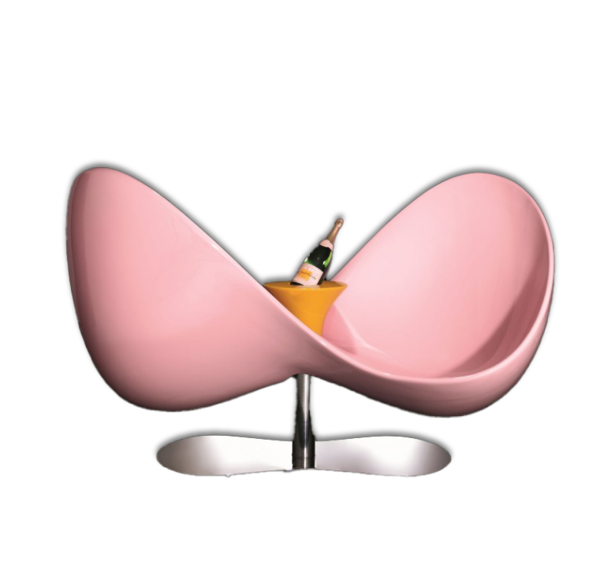

Loveseat

무한대 기호를 연상시키는 형태의 이 의자는 2006년 프랑스의 주류브랜드 뵈브 클리코를 위해 디자인한 작품이다. 이 작품은 두 이방인이 만나 대화를 나누곤 했던 18세기의 프랑스 의자를 재해석하여 디자인한 것으로 역동적이고 거침없는 곡선과 군더더기 없는 마감으로 모던한 느낌을 주지만 한편으로는 떨어진 꽃잎을 연상시키는 듯한 서정적인 감성도 녹아있다. 그래서인지 일반적인 의자라기보단 공간에 놓여 있는 오브제 같은 느낌을 주는데, 이는 아름다움은 멀리 있는 것이 아니라 우리 주변에 아주 가깝게 닿아있어야 한다는 그의 디자인적 신념을 고스란히 녹아든 결과인 듯 하다.